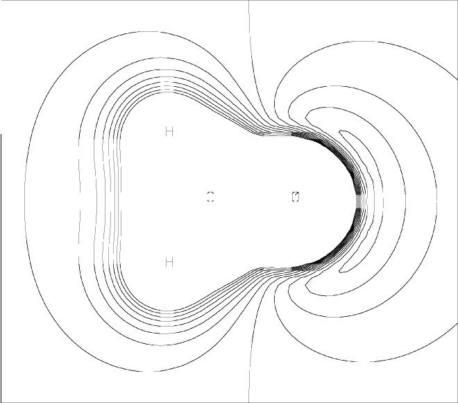

Next: Choice of Plane Up: Parametric Molecular Electrostatic Previous: Parametric Molecular Electrostatic


Next: Choice of Plane Up: Parametric Molecular Electrostatic Previous: Parametric Molecular Electrostatic
ESP plots are generated in two steps. First, a MOPAC calculation generates a 2-D grid of points. This grid is then converted into a picture by the utility program ESPLOT. ESPLOT is very simple to use: the command is esplot <filename>, where <filename> is the name of the data-set. ESPLOT generates an on-line picture of the PMEP, and a HPGL file suitable for use in generating hard-copy. Because ESPLOT is so simple, it will not be discussed further. Instead, the rest of this discussion applies to the MOPAC calculation.
The grid generated by MOPAC consists of a 2-D array of points representing a cross-section through the system. The distance between points is a constant Ångstroms. The size represented by the grid is roughly 4 Ångstroms plus twice the size of the system. For example, N2 has a N-N distance of Å, and the default associated grid represents a rectangular area of 5.8 by 4.6 Å. Each grid point represents the potential in kcal/mol which a unit positive charge would experience due to the electrostatic field of the system.
ESP grids are generated by specifying PMEP and PRTMEP. An example of a data-set for the PMEP procedure is shown in Figure 1. The PMEP plot for this data set is shown in Figure 2. This plot can be compared with the MEP plot.
Figure 1:
Data Set for PMEP Calculation of Formaldehyde
1scf AM1 PMEP MINMEP PRTMEP Formaldehyde (Cross-section in plane of molecule) Generate a 2-D grid of PMEP potentials for 'esplot' to use O 0.00000000 0 0.0000000 0 0.0000000 0 0 0 0 -0.2759 C 1.22732374 1 0.0000000 0 0.0000000 0 1 0 0 0.1384 H 1.11047287 1 122.2253516 1 0.0000000 0 2 1 0 0.0688 H 1.11048351 1 122.2158646 1 179.9998136 1 2 1 3 0.0687 |
Figure 2:
Parametric Molecular Electrostatic Potential around Formaldehyde|
 |


Next: Choice of Plane Up: Parametric Molecular Electrostatic Previous: Parametric Molecular Electrostatic